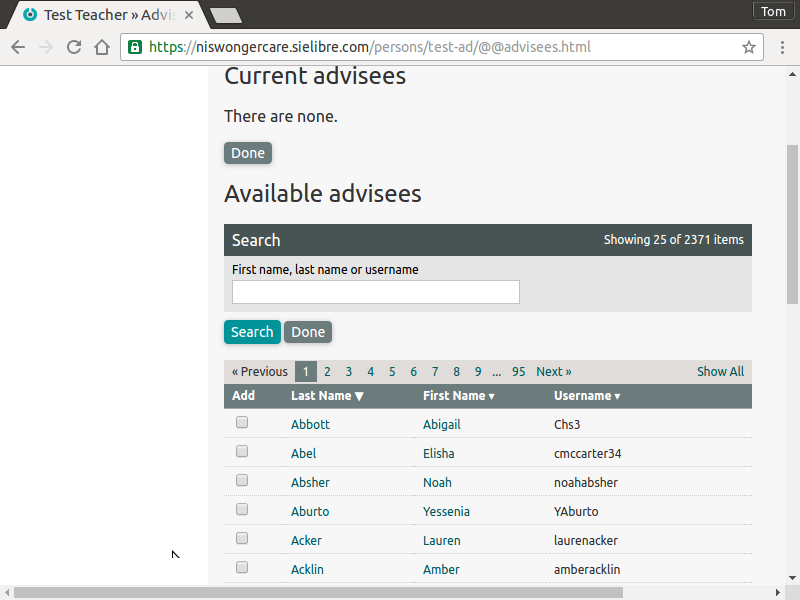

SchoolTool for Niswonger/CARE¶
SIELibre has created for Niswonger/CARE a customized and stripped down version of the SchoolTool SIS for tracking its program data about students. There are a few places where some additional explanation about how SchoolTool concepts map to the roles and tasks Niswonger/CARE requires.
Key Concepts for Power Users¶
Group Permissions¶
Some permissions in SchoolTool are based on membership in several standard groups:
Members of the Clerks group can view and edit information about all users, assign any roles to any user. This would correspond to people administering the project as a whole and supporting use of the software.
Members of the Teachers group have essentially one special permission. They can add students for whom they will have an advisor role. As long as that role is not removed, they can view and edit information about the advisee student. “Advisors” working for Niswonger/CARE need to be members of the Teachers group to add their students to the system.
You may want some top-level administrators to be members of the School Administrators group, which has read permission to all the data in the system but limited edit rights. It is essentially a “safer” version of the Clerks role, if there is no reason this person should be changing data in the system, but needs access to view everything.
Members of the Students groups do not have permission to view data about other students, and without passwords cannot log into the system.
Relationship-based Permissions¶
The main way that advisors’ access is limited to only their own students is through the advisor/advisee relationship in SchoolTool.
People in the system can have multiple advisor/advisee relationships. Each advisor can have multiple advisees and each person can have multiple advisors.
When an advisor adds a student to the system, the advisor/advisee relationship is created, giving the advisor permission to view and edit the advisee. The advisor can then add additional advisors who share the same permissions. If the advisor accidentally removes him or herself as an advisor, a person in the Clerks group or another advisor of the student will be needed to restore the relationship.
Schools as Groups¶
Individual schools are organized as Groups in SchoolTool. That is, when a student is added by an advisor, they are assigned to a school, and in SchoolTool terms, that is tracked by adding them to the corresponding group in the system. This has no effect on permissions but is important for generating reports by school.
Key Tasks¶
Adding Advisors¶
Advisors must be created by a member of the Clerks group. SIELibre will be happy to import these from a provided list, but to add them manually, first log in as a member of Clerks.
Click on the School tab:
Click on People:
In the left sidebar click on Add: Teacher:
Complete the form and click Submit or Submit and add if you want to go directly to adding another Advisor:
Advisors Adding Students¶
Log in as an advisor:
Select Add: Student:
Fill out the (lengthy) form and click Submit or Submit and add if you want to go directly to adding another student:
Viewing and Editing a Student Record¶
The default view for an advisor includes a search field and a list of their advisees:
For a member of Clerks or School Administrators to view a student, he or she should click the School tab, then People:
In either case, once the student is located, clicking on the name will take you to the main info page for the student (or other user):
To edit any information, click the yellow circle (the “edit pencil”) in the relevant area.
Generating Reports¶
To generate a report spreadsheet for the system as a whole, a member of Clerks or School Administrators should click on the School Tab and select Reports: Custom Export at left.
First, select the relevant year:
At left, the user can filter the students included in the report by School, Level and other criteria, and add data columns. This will update on the web page, and Export as XLS will generate and download a corresponding spreadsheet.
Advisors can access a slightly simplified version of this which automatically filters for their advisees by clicking Reports: Custom Export from their home page.
Starting a New Year¶
I already created a new year – 2016-2017 – and set it as “active” see Managing Multiple Years and Terms if you’re interested.
My understanding is that most of the students do not carry over to the new year (having graduated), but some of the Advisors do, and the participating schools have remained the same.
Adding New Advisors¶
Advisors are added by members of the Clerks group, and they must be assigned to the Teacher group.
So, to add a new advisor, log in as user that is a member of Clerks:
Click on People, and then Add: Teacher at left:
Fill out the relevant info – you probably only need to complete the Full Name and User sections. Use Submit if you are only entering one advisor or Submit and add if you want to add multiple teachers in sequence.
Editing Advisees¶
To add existing students as advisees, click on the Advisory slider and then on the yellow edit pencil next to Advisees:
Use this view to search for and add existing students to an advisor as necessary.

If it makes more sense in your workflow, you can also reverse the process and add an advisor from a student’s view.
Updating Repeating Students¶
All of the accounts for repeating students are still in the system, but no students are enrolled in the students group or in any of the groups corresponding to specific schools, so this should be done manually, which should be managable if the number of students is relatively small.
A member of Clerks can do this for all students, or an Advisor can edit their advisees. The advisor can select the student from their list of advisees when they log in. A clerk can click on People from the main School page, and search for the person from there.
On the student’s page, select the Groups slider.
Click on the edit pencil next to Group Memberships.
From here select the group corresponding to the correct school and the Students group and add the student to both.
If you need to edit the student’s advisor as well, you can do that from his or her Advisory slider as described above, except editing Advisors instead of Advisees.